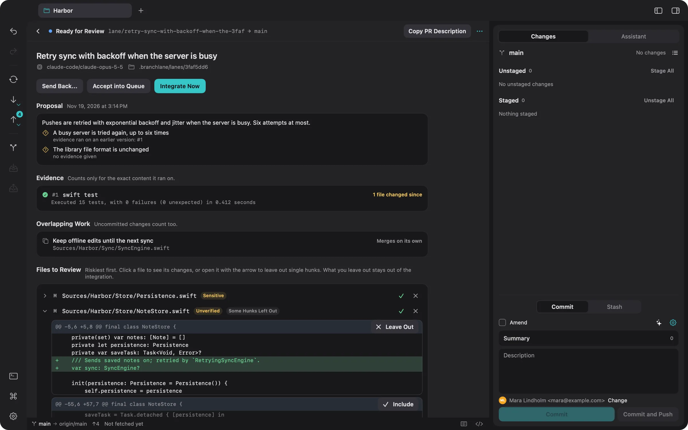

GuideAgents
Agent lanes
Give each coding agent its own branch and folder, and review its work in one place.
Agent lanes give Claude Code, Codex or another coding agent a branch and folder of their own, then let you review and integrate the work in one place.

- Decide. Send it back, accept it into the queue, or integrate it now.
- Proposal. The agent's summary and claims. Claims without evidence, or with stale evidence, are marked.
- Evidence. Tests, builds and lint runs the agent recorded. Each counts only for the content it ran on, and files changed since then are listed.
- Overlapping work. When another lane or the target changes the same lines, you see the line ranges and which side should land first.
- Files to review. Risky files come first. Leave out a file or a hunk and that part is not integrated.
How it goes#
- Open Settings > Agents and connect your agent. Branchlane shows the exact setting for each agent and only listens on this Mac.
- Start a lane from the Lanes section of the left panel, or let the agent start one with its own tools.
- Choose Start in Terminal: Terminal opens in the lane's folder with the command that starts the agent on the clipboard. Press ⌘V, then Return.
- When the agent asks for review, open the lane.
- Take the whole lane, leave out files or single hunks, or send it back with your reasons. Integrated lanes come back out with one commit.
What to tell your agent#
Once it is connected, ask for the work as usual and add a line about lanes.
Claude Code
Work in a Branchlane lane. Retry sync with exponential backoff when the server is busy,
record the swift test run as evidence, then ask for review.See it from Terminal#
A lane is an ordinary Git branch and worktree, so Terminal and other Git tools see it too.
Terminal
git worktree listOutput
/Users/me/src/app 9b26e1e [main]
/Users/me/src/app/.branchlane/lanes/a7f460dc 4c1d2e0 [lane/retry-sync-with-backoff-a7f4]To connect your own tool, see the developer docs.